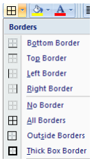

Selectăm celulele dorite → clic dreapta → Formatare celule (Format cells…) → Dată (Date) sau Oră (Time) → Se alege formatul dorit (Type:) → OK
Se tastează intr-o celulă data sau ora separată prin slesh (/) → Enter şi apare formatul ales
Selectăm toate celulele tabelului → Pagina de pornire (Home) Grupul Font (Font) Se alege tipul de chenar (Border)
